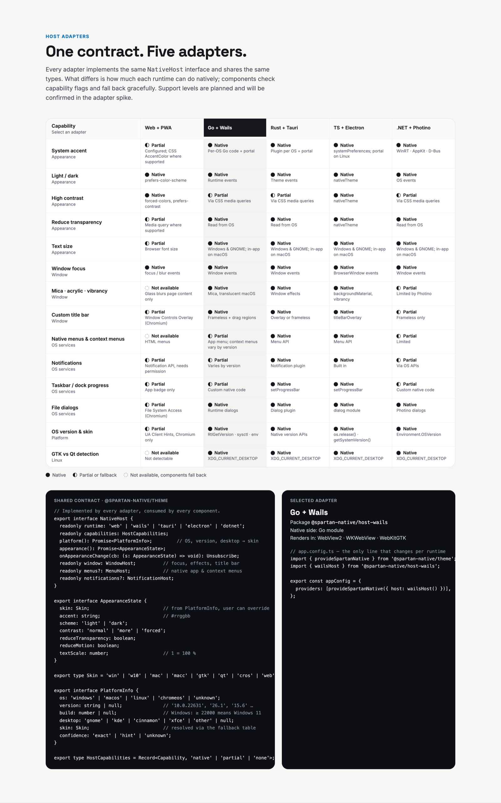

Host adapters.
Bridges to the real OS settings, one per runtime. Every adapter implements the same
NativeHost contract, so the theme and components never know where they run. Only one line of
app.config.ts changes.
// the only line that changes per runtime
import { provideSpartanNative } from '@spartan-native/theme';
import { wailsHost } from '@spartan-native/host-wails';
// or webHost, tauriHost, dotnetHost, electronHost
export const appConfig = {
providers: [provideSpartanNative({ host: wailsHost() })],
};Five runtimes. One contract.
The desktop adapters ship their native side (a Go module, a Rust crate, a NuGet package) from the same repository, at the same version as the npm package.
Browser & PWA
Browser APIs only, live: media queries, Client Hints, focus, Window Controls Overlay.
webHost()
- Package
- @spartan-native/host-web
- Native side
- none
Go + Wails
A Go service per OS. Runs the Harbor sample app as a Wails desktop app on macOS.
wailsHost()
- Repository
- Spartan-Native/host-wails
- Native side
- Go module
Rust + Tauri v2
Passes the conformance suite and reads the OS live on macOS; not yet tried in a real app window.
tauriHost()
- Repository
- Spartan-Native/host-tauri
- Native side
- crate tauri-plugin-spartan-native
.NET + Photino
Passes the conformance suite and reads the OS live on macOS; not yet tried in a real app window.
dotnetHost()
- Repository
- Spartan-Native/host-dotnet
- Native side
- NuGet SpartanNative.Photino
TypeScript + Electron
A scaffold today, and not published until there is an implementation.
electronHost()
- Package
- @spartan-native/host-electron
- Native side
- main process + preload
Conformance suite
The test suite every adapter must pass. Framework-free: Vitest, Jest, Jasmine, or a plain report.
describeHostConformance()
- Package
- @spartan-native/host-conformance
Honest about what each runtime can do.
Each adapter reports every capability as native, partial or none.
Components check the flags and fall back, never throw. Hover a cell for the detail.
| Capability | Web + PWA | Go + Wails | Rust + Tauri | TS + Electron | .NET + Photino |
|---|---|---|---|---|---|
| System accentAppearance | P | N | N | N | N |
| Light / darkAppearance | N | N | N | N | N |
| High contrastAppearance | N | P | N | N | N |
| Reduce transparencyAppearance | P | N | N | N | N |
| Text sizeAppearance | P | N | N | N | N |
| Window focusWindow | N | N | N | N | N |
| Mica · acrylic · vibrancyWindow | X | N | N | N | P |
| Custom title barWindow | P | N | N | N | P |
| Native menusOS services | X | N P | N P | N | X |
| NotificationsOS services | P | P | N | N | P |
| Taskbar / dock progressOS services | P | P | N | N | P |
| File dialogsOS services | P | N | N | N | N |
| OS version & skinPlatform | P | N | N | N | N |
| GTK vs Qt detectionLinux | X | N | N | N | N |
NativeHost
Exported by @spartan-native/theme, implemented by every adapter, consumed by every component.
- Appearance: one
AppearanceState, plus a change subscription - Window: focus; minimize, maximize and close where the host owns a window
-
Menus: plain
MenuItemdata with portablemod+shift+saccelerators, so it crosses into Go, Rust, Node or .NET -
Dialogs: open, save, pick a folder; a cancelled dialog resolves to
[]ornull, never rejects
export interface NativeHost {
readonly runtime: 'web' | 'wails' | 'tauri' | 'electron' | 'dotnet' | 'static';
readonly capabilities: HostCapabilities;
platform(): Promise<PlatformInfo>;
appearance(): Promise<AppearanceState>;
onAppearanceChange(cb: (s: AppearanceState) => void): Unsubscribe;
readonly window: WindowHost;
readonly menus?: MenuHost;
readonly dialogs?: DialogHost;
readonly notifications?: NotificationHost;
}
export interface AppearanceState {
skin: Skin;
accent: string; // #rrggbb
scheme: 'light' | 'dark';
contrast: 'normal' | 'more' | 'forced';
reduceTransparency: boolean;
reduceMotion: boolean;
textScale: number; // 1 = 100 %
}Same OS, same skin, every runtime.
Adapters detect the platform and hand it to resolveSkin() from the theme, so a Wails app and
a PWA on the same machine look the same.
| Detected | Skin |
|---|---|
| Windows, build ≥ 22000 or unknown | win |
| Windows, build < 22000 | w10 |
| macOS ≥ 26 | mac |
| macOS < 26 | macc |
| Linux, any desktop except KDE | gtk |
| Linux, KDE | qt |
| ChromeOS | cros |
| Unknown | web |
Everything a browser will tell you. Live.
For browsers and installed PWAs, using browser APIs only. Overrides from an in-app setting still win.
| Setting | Source | Live | Capability |
|---|---|---|---|
| Light / dark | prefers-color-scheme |
✓ | N |
| Contrast | prefers-contrast: more, forced-colors: active |
✓ | N |
| Reduce transparency | prefers-reduced-transparency (Chromium, Safari) |
✓ | P |
| Reduce motion | prefers-reduced-motion |
✓ | — |
| Text size | The browser's default font size | ✓ ResizeObserver | P |
| Accent |
CSS AccentColor (Firefox, Safari); else options.accent or the stock accent
|
on focus | P |
| Window focus | focus, blur, visibilitychange |
✓ | N |
| OS, version, skin | User-Agent Client Hints, else the user-agent string | once | P |
Browser limits, handled
-
Chromium hides the accent (anti-fingerprinting). The adapter detects it and uses the
platform's stock accent; offer an in-app picker with
theme.override({ accent }) - Frozen versions without Client Hints map to Windows 11 and macOS 26
-
GNOME vs KDE isn't visible to a page: GTK is assumed, pass
skin: 'qt'
webHost({
accent: '#9141ac', // when the browser hides the system accent
skin: 'gtk', // force a skin, e.g. from a user setting
});
// Installed apps: 'browser' | 'standalone' | 'overlay'
const off = watchDisplayMode((mode) => …);Thirteen checks every adapter must pass.
Each check becomes one test, so a failure names exactly what is wrong. Give it a driver and it simulates the OS to test the live events too.
-
A known
runtime; every capabilitynative,partialornone - Valid
PlatformInfoandAppearanceState, agreeing on the skin -
menusanddialogspresent exactly when their capability isn'tnone - Unsubscribe functions safe to call twice; nothing throws for
none - With a driver: live appearance and focus events that stop after unsubscribe
import { describeHostConformance } from '@spartan-native/host-conformance';
describeHostConformance('wailsHost', () => {
const runtime = fakeWailsRuntime();
return {
host: wailsHost({ runtime }),
driver: {
setAppearance: (patch) => runtime.emitThemeChange(patch),
setFocused: (focused) => runtime.emitFocus(focused),
},
};
});const report = await checkHostConformance(host, driver);
report.passed; // false if any check failed
report.results; // [{ id, title, status, detail? }]